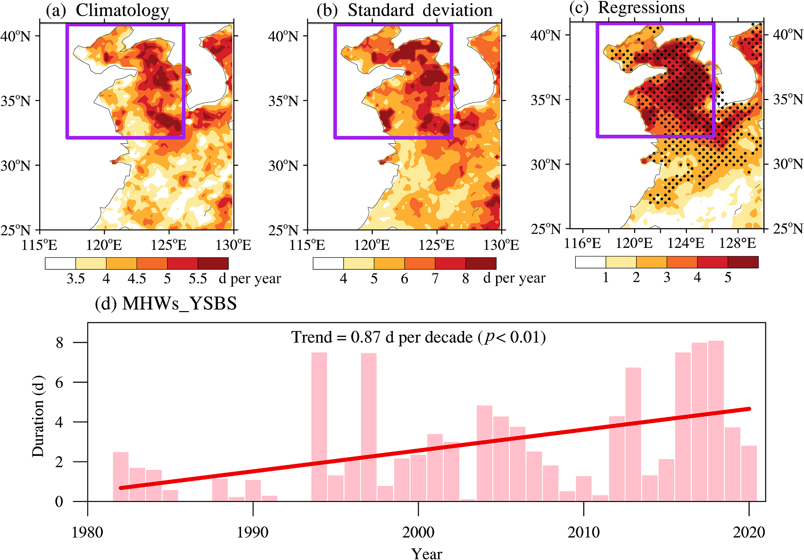
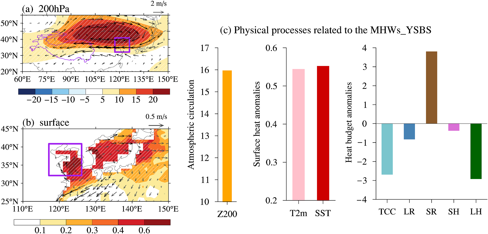
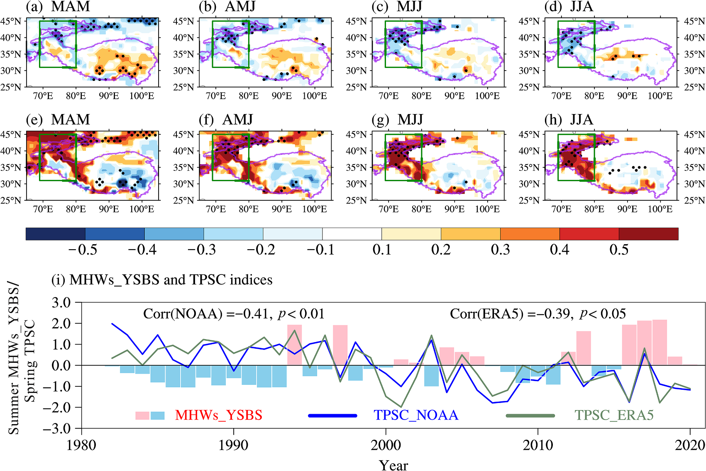
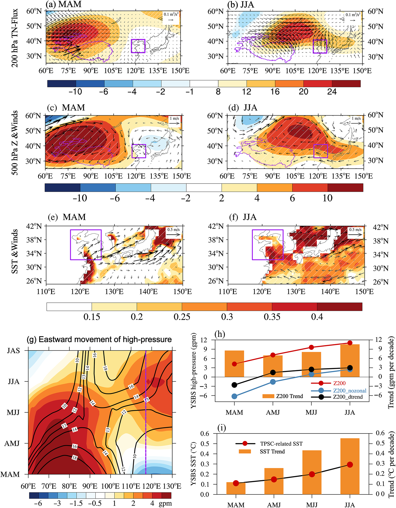
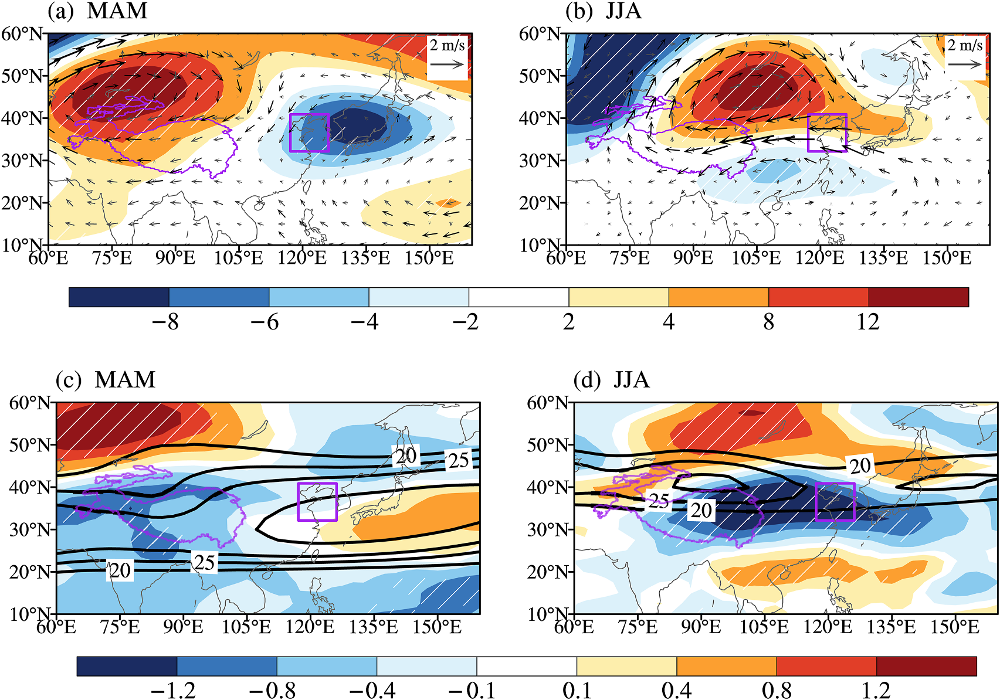
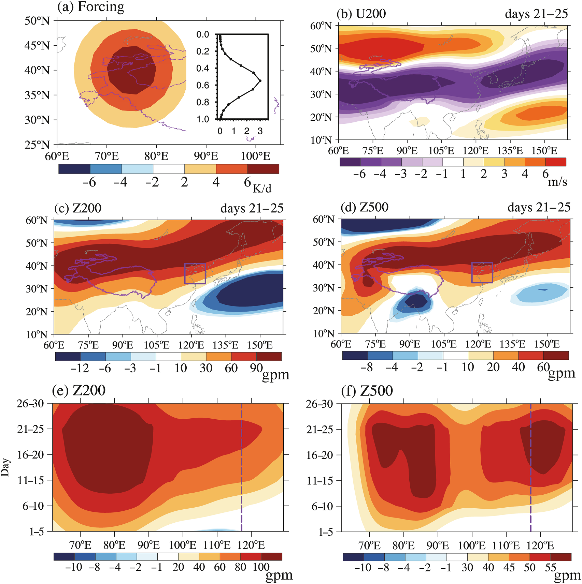
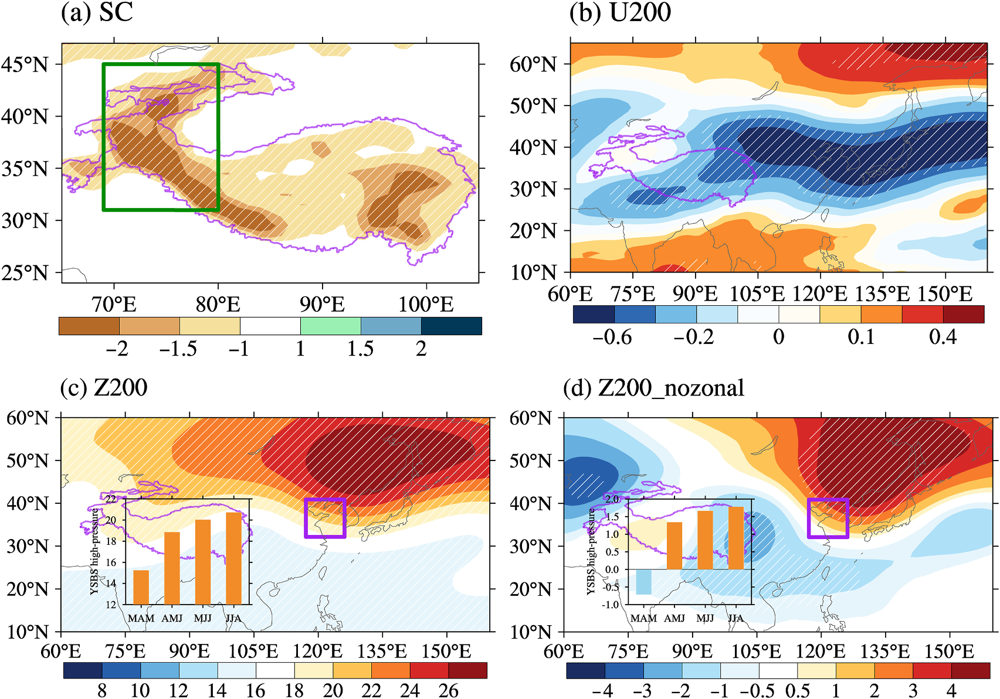
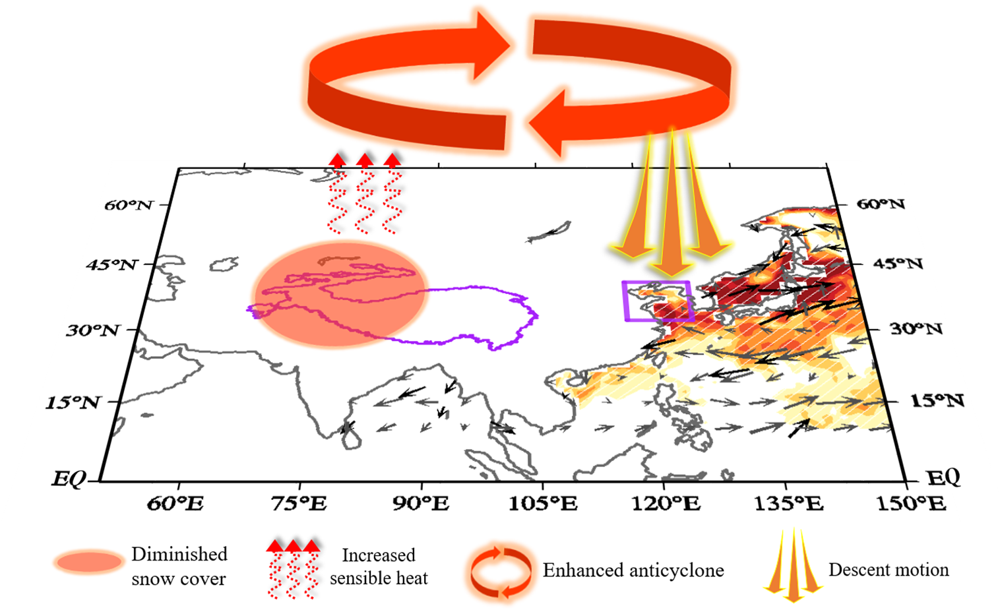

揭示青藏高原积雪覆盖减少对黄海‒渤海夏季持久性海洋热浪的作用
Unraveling the roles of decreased Tibetan Plateau snow cover on summer prolonged marine heatwaves in the Yellow Sea‒Bohai Sea
Xiao-Jing JIAa,b,*、Wei DONGa,b、Xiu-Ming LIa、Ren-Guang WUa、Hao MAc
Xiao-Jing JIAa,b,*, Wei DONGa,b, Xiu-Ming LIa, Ren-Guang WUa, Hao MAc
a 浙江省地球科学大数据与深部资源重点实验室，浙江大学地球科学学院，中国杭州 310058
a Key Laboratory of Geoscience Big Data and Deep Resource of Zhejiang Province, School of Earth Sciences, Zhejiang University, Hangzhou 310058, China
b 大湄公河次区域气象灾害与气候资源云南省重点实验室，云南大学，中国昆明 650500
b Yunnan Key Laboratory of Meteorological Disasters and Climate Resources in the Greater Mekong Subregion, Yunnan University, Kunming 650500, China
c 浙江省气候中心，中国杭州 310081
c Zhejiang Climate Centre, Hangzhou 310081, China
2025 年 1 月 5 日收稿；2025 年 3 月 26 日修订；2025 年 7 月 15 日接受；2025 年 7 月 21 日在线发表。
Received 5 January 2025; revised 26 March 2025; accepted 15 July 2025; available online 21 July 2025.
摘要 / Abstract
黄海—渤海区域（YSBS）夏季海洋热浪（MHWs）频发，而其上游的青藏高原正迅速变暖且积雪覆盖不断减少，但这两种趋势之间的联系仍不清楚。
The Yellow Sea—Bohai Sea (YSBS) region faces frequent summer marine heatwaves (MHWs), while the upstream Tibetan Plateau is rapidly warming and losing snow cover, yet the connection between these two trends remains unclear.
本研究基于观测数据和数值模式，揭示了 1982—2020 年青藏高原积雪覆盖（TPSC）与黄海—渤海夏季海洋热浪（MHWs_YSBS）之间的内在机制。
This study, based on observational data and numerical models, reveals the underlying mechanisms between Tibetan Plateau snow cover (TPSC) and summer MHWs in the YSBS (MHWs_YSBS) during 1982—2020.
结果表明，夏季 MHWs_YSBS 持续时间延长与春季 TPSC 减少之间存在显著正相关。
The results indicate a significant positive correlation between the prolonged duration of summer MHWs_YSBS and diminished spring TPSC.
研究发现，春季 TPSC 减少具有相当强的持续性，并通过影响青藏高原的热力状况，在高原上空触发一个深厚的异常反气旋系统。
The findings indicate that decreased spring TPSC exhibits considerable persistence and triggers a deep anomalous anticyclonic system over the Tibetan Plateau by influencing its thermal condition.
该反气旋系统从春季到夏季不断发展并向东移动，导致夏季 YSBS 上空出现异常高压系统。
This anticyclonic system develops and moves eastward from spring to summer, leading to an anomalous high-pressure system over the YSBS during summer.
该系统伴随下沉气流和云量减少，两者共同为夏季 MHWs_YSBS 的出现创造了有利条件。
This system is accompanied by descending air and a decrease in cloud cover, which collectively create conducive conditions for the emergence of summer MHWs_YSBS.
由 TPSC 减少引起的反气旋系统调节 YSBS 区域上空的西风，形成维持并增强 MHWs 的双急流型。
The reduced TPSC-induced anticyclonic system modulates westerly winds over the YSBS region, forming a double jet pattern that sustains and amplifies MHWs.
数值模拟试验和定量分析进一步阐明了春季 TPSC 减少影响夏季 MHWs_YSBS 持续性的机制。
Numerical modeling experiments and quantitative analysis further elucidate the mechanism by which reduced spring TPSC influences the persistence of summer MHWs_YSBS.
这一过程由从青藏高原延伸至 YSBS 的大气高压系统增强所驱动，其中 TPSC 对该效应的贡献超过 50%。
This process is driven by the enhancement of atmospheric high-pressure systems extending from the Tibetan Plateau to the YSBS, with TPSC contributing over 50% to this effect.
这些发现深化了我们对变暖中的青藏高原之气候影响的认识，并为理解持久性 MHWs_YSBS 提供了新视角。
These findings deepen our understanding of the climatic impacts of the warming Tibetan Plateau and offer a new perspective for understanding the prolonged MHWs_YSBS.
关键词：积雪覆盖；青藏高原；夏季海洋热浪；黄海‒渤海；大气高压
Keywords: Snow cover; Tibet Plateau; Summer marine heatwaves; Yellow Sea‒Bohai Sea; Atmospheric high-pressure
* 通讯作者：浙江大学地球科学学院，中国杭州 310058。
* Corresponding author: School of Earth Sciences, Zhejiang University, Hangzhou 310058, China.
电子邮箱：jiaxiaojing@zju.edu.cn（JIA X.-J.）。
E-mail address: jiaxiaojing@zju.edu.cn (JIA X.-J.).
同行评审由国家气候中心（中国气象局）负责。
Peer review under responsibility of National Climate Centre (China Meteorological Administration).
DOI：https://doi.org/10.1016/j.accre.2025.07.004
DOI: https://doi.org/10.1016/j.accre.2025.07.004
1674-9278/© 2025 作者。
1674-9278/© 2025 The Authors.
由 Elsevier B.V. 代表 KeAi Communications Co. Ltd. 提供出版服务。
Publishing services by Elsevier B.V. on behalf of KeAi Communications Co. Ltd.
本文是依据 CC BY-NC-ND 许可协议（http://creativecommons.org/licenses/by-nc-nd/4.0/）发布的开放获取文章。
This is an open access article under the CC BY-NC-ND license (http://creativecommons.org/licenses/by-nc-nd/4.0/).
1. 引言 / 1. Introduction
海洋热浪（MHWs）是一类海表温度（SST）显著超过历史预期的极端气候现象（Hobday et al., 2016; Oliver et al., 2018a; Scannell et al., 2016），会对海洋生态系统产生深远影响，严重扰乱渔业并影响人类社会（Mills et al., 2013; Salinger et al., 2020; Thomsen et al., 2019）。
Marine heatwaves (MHWs), extreme climatic phenomena with sea surface temperature (SST) significantly exceeding historical expectations (Hobday et al., 2016; Oliver et al., 2018a; Scannell et al., 2016), have far-reaching consequences for marine ecosystems, causing significant disruptions to fisheries and affecting human societies (Mills et al., 2013; Salinger et al., 2020; Thomsen et al., 2019).
近几十年来，MHWs 的持续时间和频率均有所增加（Oliver et al., 2018a, 2021, Oliver et al., 2018a），而全球变暖效应的加剧进一步强化了这一趋势（Frölicher and Laufkötter, 2018）。
Over recent decades, the duration and frequency of MHWs have increased (Oliver et al., 2018a, 2021, Oliver et al., 2018a), a trend that has been exacerbated by the intensifying effects of global warming (Frölicher and Laufkötter, 2018).
中国拥有广阔的海域，同样受到 MHWs 的严重影响，尤其是水深较浅、温度敏感性较高的近岸区域，其快速而剧烈的温度变化风险进一步升高（Li et al., 2019; Liu et al., 2022; Yao and Wang, 2021）。
Endowed with extensive maritime territories, China also experiences the severe influence of MHWs, especially in nearshore areas with shallower depths and higher temperature sensitivity, elevating the risk of rapid and intense temperature changes (Li et al., 2019; Liu et al., 2022; Yao and Wang, 2021).
MHWs 的发生是一个受多种海洋动力过程和外部强迫因素影响的复杂过程。
The occurrence of MHWs is a complex process influenced by various ocean dynamics and external forcing factors.
在局地尺度上，若干关键因素会通过影响海洋混合层热收支而触发 MHWs。
Locally, crucial factors trigger MHWs by affecting the ocean’s mixed-layer heat budget.
例如，海洋平流是一种重要机制，它将温暖海水输送至特定区域，引起温度异常升高（Feng et al., 2013）。
For instance, ocean advection, an important mechanism, transports warm seawater to specific areas, causing abnormal temperature increases (Feng et al., 2013).
此外，大尺度大气下沉运动会减少云量，并增加到达海洋表面的短波辐射，从而进一步促进 MHWs（Benthuysen et al., 2014; Chen and Qin, 2016; Sparnocchia et al., 2006）。
Additionally, large-scale atmospheric subsidence reduces cloud cover and increases shortwave radiation reaching the ocean surface, further promoting MHWs (Benthuysen et al., 2014; Chen and Qin, 2016; Sparnocchia et al., 2006).
在更大尺度上，大尺度大气环流异常在 MHWs 的形成中起着关键作用。
On a broader scale, large-scale atmospheric circulation anomalies play a crucial role in forming MHWs.
例如，厄尔尼诺—南方涛动（ENSO）不仅影响其主要作用区——热带太平洋——的 MHWs，还会通过大气遥相关过程影响印度洋、大西洋和南大洋等遥远区域（Di Lorenzo and Mantua, 2016; Oliver et al., 2018b; Sen Gupta et al., 2020）。
For example, El Niño—Southern Oscillation (ENSO) not only impacts MHWs in its primary zone, the tropical Pacific, but also influences distant regions like the Indian Ocean, Atlantic Ocean, and Southern Ocean through atmospheric teleconnection processes (Di Lorenzo and Mantua, 2016; Oliver et al., 2018b; Sen Gupta et al., 2020).
东亚边缘海区域的研究表明，MHWs 与大气作用之间的联系更强（Han et al., 2023; Lee et al., 2022）。
Research in the East Asian Marginal Seas region indicates a stronger connection between MHWs and atmospheric effects (Han et al., 2023; Lee et al., 2022).
既有研究表明，青藏高原通过热力和动力机制深刻影响着局地及远方气候（He et al., 2019; Wu et al., 2023; You et al., 2020）。
Previous studies have revealed that the Tibetan Plateau profoundly influences local and distant climates through thermodynamic and dynamic mechanisms (He et al., 2019; Wu et al., 2023; You et al., 2020).
青藏高原积雪覆盖异常通过积雪反照率效应和积雪水文效应复杂地调节高原热力状况，并通过雪—气相互作用引起大气环流的显著改变（Dong et al., 2023; Li and Zhao, 2017; Wang et al., 2023）。
Anomalies in snow cover over the Tibetan Plateau intricately modulate the thermal conditions of the plateau through the snow albedo effect and snow hydrological effect, inducing notable alterations in atmospheric circulations through snow‒air interactions (Dong et al., 2023; Li and Zhao, 2017; Wang et al., 2023).
此外，青藏高原（TP）积雪覆盖（TPSC）表现出良好的跨季节持续性（Wang et al., 2023），因而成为气候预测的一项重要指标（Dong et al., 2024a; Qian et al., 2020）。
Furthermore, the snow cover over the TP (TPSC) exhibits commendable cross-seasonal persistence (Wang et al., 2023) and, therefore, emerges as a crucial indicator for climate prediction (Dong et al., 2024a; Qian et al., 2020).
积雪覆盖减少往往会增强青藏高原的热源作用，加速高原变暖（Xu et al., 2024）。
Decreased snow cover tends to enhance the heat source on the Tibetan Plateau, accelerating its warming (Xu et al., 2024).
这种增暖效应会促使上方高压系统增强并向东扩展，随后引发东亚热浪（Dong et al., 2024b）。
This warming effect contributes to the strengthening and eastward expansion of the overlying high-pressure system, which subsequently leads to heatwaves in East Asia (Dong et al., 2024b).
当该高压系统增强并向东移至黄海和渤海（YSBS）区域上空时，它很可能会影响海表温度的升高。
When the high-pressure system strengthens and shifts eastward over the Yellow Sea and Bohai Sea (YSBS) region, it is likely to influence the warming of sea surface temperatures.
近期研究强调了大气环流对 MHWs 或海洋变暖的重要影响（di Lorenzo and Mantua, 2016; Li et al., 2023; Oliver et al., 2018b）。
Recent researches have underscored the significant influence of atmospheric circulation on MHWs or ocean warming (di Lorenzo and Mantua, 2016; Li et al., 2023; Oliver et al., 2018b).
青藏高原的动力和热力效应已被认定为北半球夏季大气环流异常的关键驱动因素，对下游的东亚和西太平洋地区尤其如此（Liu et al., 2020; Wu et al., 2023）。
The dynamical and thermal effects of the Tibetan Plateau have been identified as critical drivers of summer atmospheric circulation anomalies in the Northern Hemisphere, especially for the downstream East Asian and Western Pacific regions (Liu et al., 2020; Wu et al., 2023).
值得注意的是，由于积雪覆盖和反照率下降，青藏高原近几十年来经历了快速变暖（Hu et al., 2023; Liu et al., 2024）。
Notably, the Tibetan Plateau has experienced rapid warming in recent decades due to declining snow cover and albedo (Hu et al., 2023; Liu et al., 2024).
然而，青藏高原这种快速气候变化与西北太平洋海洋热浪（MHWs）及其相关大气环流之间的内在联系仍不确定。
However, the underlying connection between this rapid climate change on the Tibetan Plateau and the Northwest Pacific Marine Heatwaves (MHWs) and their associated atmospheric circulation remains uncertain.
本研究利用观测数据、数值模式试验以及世界气候研究计划第六次国际耦合模式比较计划（CMIP6）的历史模拟，探测并验证 TPSC 对 YSBS 区域 MHWs 的影响。
In this study, we use observational data, numerical model experiments, and the historical simulations from the World Climate Research Programme’s Coupled Model Intercomparison Project Phase 6 (CMIP6) to detect and verify the impact of TPSC on MHWs over the YSBS region.
通过这一综合考察，我们旨在为认识中国边缘海 MHWs 的发生和延长提供新见解。
Through this comprehensive examination, we aim to provide novel insights into the occurrence and prolongation of the MHWs in the Marginal Seas of China.
2. 数据与方法 / 2. Data and methods
2.1. 数据 / 2.1. Data
积雪覆盖的每周气候数据取自 Rutgers University Global Snow Lab（http://climate.rutgers.edu/snowcover），该数据在 1982—2020 年期间的水平分辨率为 25 km。
The weekly climate data for snow cover are retrieved from the Rutgers University Global Snow Lab (http://climate.rutgers.edu/snowcover), which has a horizontal resolution of 25 km from 1982 to 2020.
随后，我们将积雪覆盖数据转换为水平分辨率为 1◦ × 1◦ 的月平均数据。
Then, we converted the snow cover data to monthly mean data with a horizontal resolution of 1◦ × 1◦.
月度气象数据来自 ERA5，分辨率为 1◦ × 1◦（Hersbach et al., 2020）（https://www.ecmwf.int/en/forecasts/dataset/ecmwf-reanalysis-v5）。
The monthly meteorological data are obtained from ERA5 with a resolution of 1◦ × 1◦ (Hersbach et al., 2020) (https://www.ecmwf.int/en/forecasts/dataset/ecmwf-reanalysis-v5).
美国国家海洋和大气管理局（NOAA）最优插值海表温度（OISST）高分辨率数据集第 2 版（https://www.ncei.noaa.gov/products/climate-data-records/sea-surface-temperature-optimum-interpolation）的逐日海表温度（SST）分辨率为 0.25◦ × 0.25◦（Reynolds et al., 2007）；鉴于其精度高且广泛用于检测 MHWs，本研究选用了该数据（Huang et al., 2021）。
The daily sea surface temperature (SST) from the National Oceanic and Atmospheric Administration (NOAA)’s Optimum Interpolation Sea Surface Temperature (OISST) High Resolution Dataset Version 2 (https://www.ncei.noaa.gov/products/climate-data-records/sea-surface-temperature-optimum-interpolation), with a 0.25◦ × 0.25◦ resolution (Reynolds et al., 2007), was chosen for its high accuracy and extensive use in detecting MHWs (Huang et al., 2021).
本研究采用 15 个第六次国际耦合模式比较计划（CMIP6）（https://esgf-node.llnl.gov/search/cmip6/）的历史模拟，时间跨度为 1979—2014 年（Eyring et al., 2016）。
This study employs historical simulations from the 15 Coupled Model Intercomparison Project Phase 6 (CMIP6) (https://esgf-node.llnl.gov/search/cmip6/), spanning the period from 1979 to 2014 (Eyring et al., 2016).
历史模拟按照 SSP245 情景延伸至 2020 年。
The historical simulations are extended to 2020 following the SSP245 scenario.
为与观测保持一致，将模拟数据重新网格化至统一的 1◦ × 1◦ 分辨率。
To be consistent with observations, the simulations were regridded on the common resolution of 1◦ × 1◦.
CMIP6 模式的详细信息见表 A1。
The details of the CMIP6 models are shown in Table A1.
这些多模式模拟可从地球系统网格联合会公开获取（https://esgf-node.llnl.gov/search/cmip6/）。
These multimodel simulations are publicly available from the Earth System Grid Federation (https://esgf-node.llnl.gov/search/cmip6/).
此外，我们采用中国科学院灵活全球海洋—大气—陆地系统模式第 3 版（FGOALS-f3-L）（Zhou et al., 2016），评估大气对青藏高原地表热异常的响应。
Additionally, we employed the Chinese Academy of Sciences' Flexible Global Ocean—Atmosphere—Land System model, version 3 (FGOALS-f3-L) (Zhou et al., 2016), to assess the atmospheric response to surface thermal anomalies over the Tibetan Plateau.
共开展了两组试验。
Two experiment sets were conducted.
第一组试验 FGOALS-f3-L amip-hist 由观测历史 SST 和海冰数据驱动。
The first set, FGOALS-f3-L amip-hist, was driven by observed historical SST and sea ice data.
第二组试验 FGOALS-f3-L amip-TIP-nosh 通过移除青藏高原海拔 500 m 以上区域的地表感热通量而设计。
The second, FGOALS-f3-L amip-TIP-nosh, was designed by removing surface sensible heat flux at elevations above 500 m over the Tibetan Plateau.
通过比较这两组试验的结果，我们可以研究青藏高原热力强迫的影响。
By comparing the results of these two experiments, we can investigate the impact of thermal forcing over the Tibetan Plateau.
采用 1979—2014 年的 200 hPa 月平均位势高度和地表温度，其水平分辨率约为 1◦。
Monthly mean geopotential height at 200 hPa and surface temperature are used, which have a horizontal resolution of approximately 1◦ for the period of 1979—2014.
2.2. 海洋热浪识别与动力诊断 / 2.2. Marine heatwaves identification and dynamics diagnosis
MHW 事件的识别方法遵循既有方法（Hobday et al., 2016）。
The approach to identifying MHW events adheres to the previous method (Hobday et al., 2016).
在每个网格点上，当逐日 SST 连续至少 5 d 超过基于 1982—2020 年气候态时期计算的随季节变化的第 90 百分位阈值时，即识别为一次 MHW 事件。
An MHW event is identified at each grid point when the daily SST exceeds the seasonally varying 90th percentile threshold, calculated based on the 1982—2020 climatology period, for at least five consecutive days.
具体而言，首先利用气候态时期（1982—2020 年）所有年份中以每个日历日为中心的 11-d 窗口内 SST 值计算第 90 百分位数，以确定逐日阈值；随后对所有阈值应用 31-d 移动平均进行平滑。
Specifically, the daily threshold is determined by first computing the 90th percentile of SST values within an 11-d window centered on each calendar day across all years in the climatological period (1982—2020), and then all threshold values are smoothed by applying a 31-d moving average.
此外，我们采用了事件合并准则：若两次连续事件之间的间隔不超过 2 d，则将其视为一次连续事件。
Furthermore, we applied an event-merging criterion whereby two consecutive events are considered a single continuous event if separated by an interval of 2 d or less.
黄海和渤海海洋热浪持续时间指数（MHWs_YSBS）定义为 YSBS 区域内夏季 MHWs 总持续时间的区域平均（图 1 中的紫色方框）。
The duration index of marine heatwaves over the Yellow Sea and Bohai Sea (MHWs_YSBS) is calculated as the area-mean of the total duration of summer MHWs across the YSBS region (purple boxes in Fig. 1).
TPSC 指数表示青藏高原西部 31◦—43◦ N、69◦—80◦ E 范围内积雪覆盖的区域平均。
The TPSC index represents the regional average of snow cover for the western Tibetan Plateau, spanning 31◦—43◦ N, 69◦—80◦ E.
东亚双急流指数定义为纬向风的区域平均，计算方法是：北部区域（45◦—60◦ N，80◦—120◦ E）与南部区域（15◦—25◦ N，90◦—130◦ E）之和减去中部区域（25◦—45◦ N，90◦—130◦ E）。
The East Asian double jet index is defined as the regional average of zonal winds, calculated by subtracting the middle area (25◦—45◦ N, 90◦—130◦ E) from the sum of the northern area (45◦—60◦ N, 80◦—120◦ E) and the southern area (15◦—25◦ N, 90◦—130◦ E).
YSBS 高压指数定义为指定区域（32.125◦—40.875◦ N，117.125◦—126.125◦ E）内位势高度的区域平均。
The YSBS high-pressure index is defined as the regional average of the geopotential height within the specified region (32.125◦—40.875◦ N, 117.125◦—126.125◦ E).
此外，为加强对大气环流波动性的刻画，参照既有研究（Sun et al., 2022），还使用去除纬向平均分量后的位势高度计算 YSBS 高压指数。
Furthermore, to enhance the description of atmospheric circulation waviness, the YSBS high-pressure index is also calculated using the geopotential height without its zonal mean component, following previous work (Sun et al., 2022).
采用双尾 Student’s t 检验确定线性回归和相关系数的统计显著性水平。
A two-tailed Student’s t-test was used to determine the statistical significance levels of linear regressions and correlation coefficients.
线性趋势采用 Theil—Sen 估计方法计算，并通过 Mann-Kendall 非参数检验评估其显著性（Collaud Coen et al., 2020）。
Linear trends were calculated using the Theil—Sen estimation method and assessed for significance through the Mann-Kendall non-parametric test (Collaud Coen et al., 2020).
异常值以 1981—2010 年气候态平均为参照。
The anomalies are referenced to the climatological mean for the period 1981—2010.
本研究明确考察四个不同的季节时段：3—4—5 月（MAM，春季）、4—5—6 月（AMJ）、5—6—7 月（MJJ）和 6—7—8 月（JJA，夏季）。
This study examines explicitly four distinct seasonal periods: March—April—May (MAM, spring), April—May—June (AMJ), May—June—July (MJJ), and June—July—August (JJA, summer).
按照 Takaya and Nakamura（2001）的方法计算波作用通量（WAF）的水平分量，以研究 Rossby 波的传播。
The horizontal components of wave activity flux (WAF) are calculated to investigate the propagation of Rossby waves following Takaya and Nakamura (2001).
2.3. 线性斜压模式 / 2.3. The linear baroclinic model
采用线性斜压模式（LBM）（Watanabe and Kimoto, 2000）考察大气对低 TPSC 强迫的响应，该模式尤其适合分析大气对给定加热异常的响应。
The atmospheric response to low TPSC forcing is examined using the linear baroclinic model (LBM) (Watanabe and Kimoto, 2000), which is particularly suited for analyzing atmospheric responses to prescribed heating anomalies.
LBM 采用 T42 水平分辨率和 20 个 sigma 层的垂直分辨率，并围绕指定的基本态对原始方程进行线性化。
The LBM operates at a horizontal resolution of T42 and a vertical resolution of 20 sigma levels, linearizing the primitive equations around specified base states.
由于积雪反照率效应，TPSC 减少会导致青藏高原西部感热增强和对流层变暖（图 A2d 和 h），因此在该区域观测到与 TPSC 异常相关的热源效应增强。
Given that the decreased TPSC leads to enhanced sensible heat and tropospheric warming over the western Tibetan Plateau due to the snow albedo effect (Fig. A2d and h), an intensified heat source effect is observed in this region related to the anomalous TPSC.
为阐明大气对 TPSC 所致加热异常的响应，在青藏高原西部施加理想化热加热异常，其加热率为 6 K/d，并在 0.75 sigma 层达到峰值，该层对应对流层中低层。
To elucidate the atmospheric response to the TPSC-induced heating anomalies, idealized thermal heating anomalies are implemented in the western Tibetan Plateau, characterized by a heating rate of 6 K/d, peaking at the 0.75 sigma level, which corresponds to the mid-lower troposphere.
需要指出的是，大气环流响应对热源强度及其垂直位置的某些变化相对不敏感。
It is important to note that the atmospheric circulation response is relatively insensitive to some changes in intensity and vertical positioning of the heat source.
模式运行 30 d。
The model runs for 30 d.
有关 LBM 的更多详细信息，请访问 https://ccsr.aori.u-tokyo.ac.jp/~lbm/sub/lbm.html。
For further comprehensive details about the LBM, please visit https://ccsr.aori.u-tokyo.ac.jp/~lbm/sub/lbm.html.
3. 结果 / 3. Result
3.1. 黄海–渤海区域海洋热浪的特征及其对应的大气环流 / 3.1. Characteristics of MHWs_YSBS and their corresponding atmospheric circulation
图 1a 和 b 展示了 1982—2020 年黄海–渤海区域（YSBS）夏季海洋热浪（MHWs）持续时间的气候平均态及其变化。
Fig. 1a and b presents the climatological mean and variation of summer MHWs duration over the YSBS from 1982 to 2020.
值得注意的是，YSBS 区域的 MHW 事件不仅持续时间较长，而且变异性显著。
Notably, the YSBS region encountered both prolonged and remarkable variability in MHW occurrences.
MHWs_YSBS 指数表示 YSBS 区域 MHW 持续时间的区域平均值，呈显著上升趋势（每十年 0.87 d，p < 0.01）（图 1d）。
The MHWs_YSBS index, representing the regional average of MHW durations for the YSBS, displays a significant increasing trend (0.87 d per decade, p < 0.01) (Fig. 1d).
还应注意的是，正如先前研究所报道的那样，2016—2018 年连续三年间，YSBS 发生了前所未有的极端 MHW 事件（Gao et al., 2020）。
Also noted that, during the consecutive years from 2016 to 2018, unprecedented extreme MHWs incidents took place in the YSBS, as reported by a previous study (Gao et al., 2020).
回归图显示 YSBS 存在显著的 MHW（图 1c），同时也证实 MHWs_YSBS 指数能够有效捕捉整个 YSBS 区域夏季 MHW 持续时间的变化。
The regression map shows significant MHWs in the YSBS (Fig. 1c) and also confirms the effectiveness of the MHWs_YSBS index in capturing the variation of summer MHWs duration across the YSBS region.

图 1 图注 / Figure 1 caption
图 1. 1982—2020 年黄海和渤海区域夏季海洋热浪（MHWS）持续时间特征：（a）气候态平均（1982—2020 年），（b）标准差，（c）持续时间对标准化黄海和渤海 MHWs 持续时间（MHWs_YSBS）指数的回归，以及（d）MHWs_YSBS 持续时间的时间序列和线性趋势。
Fig. 1. Characteristics of summer marine heatwaves (MHWS) duration over the Yellow and Bohai Seas region in 1982—2020: (a) climatological mean (1982—2020), (b) standard deviation, (c) regressions of durations against the normalized Yellow and Bohai Seas MHWs durations (MHWs_YSBS) index, and (d) time series of MHWs_YSBS duration and the linear trend.
紫色方框表示 YSBS 区域（32.125◦—40.875◦ N，117.125◦—126.125◦ E）。
The purple boxes represent the YSBS region (32.125◦—40.875◦ N, 117.125◦—126.125◦ E).
（c）中的黑点表示通过 95% 置信水平的回归。
The black dots in (c) indicate the regressions passing the 95% confidence level.
图 2 展示了与夏季 MHWs_YSBS 变率相关的大气环流异常和表面通量。
Fig. 2 illustrates the atmospheric circulation anomalies and surface flux associated with the variability of summer MHWs_YSBS.
在高层，MHWs_YSBS 的变化主要受一个从青藏高原延伸至 YSBS 区域的异常高压系统影响（图 2a）。
In the upper levels, the variation of MHWs_YSBS is predominantly influenced by an anomalous high-pressure system, stretching from the Tibetan Plateau to the YSBS region (Fig. 2a).
地表也存在明显的反气旋，这表明 YSBS 上空具有深厚的正压大气环流结构（图 2b 中的矢量）。
At the surface, an anticyclone is also evident, indicating a deep barotropic atmospheric circulation structure over the YSBS (vectors in Fig. 2b).
这一显著的反气旋导致总云量（TCC）减少，从而使 YSBS 上空的向下短波辐射（SR）增加。
This pronounced anticyclone results in reduced total cloud cover (TCC), leading to an increase in downward shortwave radiation (SR) over the YSBS.
因此，海表温度（图 2b 中的阴影）因吸收更多向下 SR 而升高，随后又通过增加向上长波辐射和感热通量使其上方空气增温（图 2c）。
Consequently, the SST (shadings in Fig. 2b) rises as it absorbs more downward SR, subsequently warming the above air through increased upward longwave radiation and sensible heat flux (Fig. 2c).
向上潜热通量为正，这可能是高温引发大量蒸发所致。
The upward latent heat flux is positive, probably due to extensive evaporation caused by high temperatures.
总之，表面热通量分析表明，短波辐射在海表温度升高中发挥最重要的作用（图 3a）。
In summary, the analysis of surface heat flux indicates that shortwave radiation plays the most significant role in sea surface temperature warming (Fig. 3a).
这一发现与 YSBS 高压异常及其所导致的云量减少非常一致。
This finding aligns well with the YSBS high-pressure anomaly and its resulting reduction in cloud cover.
潜热仅在 MHW 爆发前的短时间尺度上促进 SST 升高，而对季节平均 SST 则产生冷却作用。
Latent heat contributes to SST warming only over a short time scale before MHW outbreaks and exerts a cooling effect on seasonal mean SST.

图 2. （a）回归到标准化夏季黄海–渤海海洋热浪持续时间指数（MHWs_YSBS）上的夏季 200 hPa 位势高度（Z200，gpm）和风（矢量）异常；（b）回归到标准化夏季 MHWs_YSBS 指数上的夏季 SST（阴影，◦C）和 10 m 风（矢量）（白色斜线和黑色矢量表示 95% 置信水平；紫色方框表示 YSBS）；（c）夏季 YSBS 区域平均变量的异常，包括 T2m（2 m 平均温度，◦C）、TCC（总云量，%）、SR/LR（短波/长波辐射，W/m2）以及 SH/LH（感热/潜热通量，W/m2）（这些异常由物理变量回归到标准化夏季 MHWs_YSBS 指数得到）。
Fig. 2. (a) Summer 200 hPa geopotential height (Z200, gpm) and wind (vector) anomalies regressed onto the normalized summer Yellow and Bohai Seas MHWs durations index (MHWs_YSBS), (b) summer SST (shading, ◦C) and winds at 10 m (vector) regressed onto the normalized summer MHWs_YSBS index (the white slashes and the black vectors denote the 95% confidence level; the purple boxes represent the YSBS), and (c) anomalies of area-averaged variables over YSBS during summer, including T2m (mean temperature at 2 m, ◦C), TCC (total cloud cover, %), SR/LR (shortwave/longwave radiation, W/m2), and SH/LH (sensible/latent heat flux, W/m2) (these anomalies are derived from the regression of physical variables onto the normalized summer MHWs_YSBS index).
为阐明 MHWs_YSBS 背后的异常高压系统如何演变，我们考察了从前一春季到夏季、与 MHWs_YSBS 相关的 30◦—45◦N 纬带平均环流异常垂直剖面（图 A1）。
To elucidate the evolution of the anomalous high-pressure system underlying MHWs_YSBS, we examined the vertical cross-section of mean circulation anomalies spanning 30◦—45◦N associated with the MHWs_YSBS from the preceding spring to summer (Fig. A1).
这一显著的夏季异常高压系统伴随高温，并从青藏高原延伸至 YSBS；其源头可追溯至前一春季。
The significant summer anomalous high-pressure system, accompanied by high temperature and extending from the Tibetan Plateau to the YSBS, can be traced back to the previous spring.
该异常高压最初于春季在青藏高原上空形成（图 A1a），随后从春季到夏季向东传播（图 A1b 和 Ac）。
This anomalous high pressure initially forms over the Tibetan Plateau in spring (Fig. A1a) and then propagates eastward from spring through summer (Fig. A1b and Ac).
到夏季，这一异常正压高压系统控制 YSBS 区域，成为夏季 MHWs_YSBS 的主要驱动因素（图 A1d）。
By summer, this anomalous barotropic high-pressure system dominates the YSBS region, serving as the primary driver for the summer MHWs_YSBS (Fig. A1d).
该高压系统的演变暗示，夏季 MHWs_YSBS 可能与前一春季青藏高原上的热异常有关，这一联系将在下一节中探讨。
The evolution of this high-pressure system suggests a potential connection between the summer MHWs_YSBS and preceding spring thermal anomalies on the Tibetan Plateau, which will be investigated in the following section.
3.2. 局地环流对春季青藏高原积雪覆盖减少的响应 / 3.2. The local circulation response to reduced spring TPSC
为评估 TPSC 与夏季 MHWs_YSBS 之间的潜在联系，我们考察了从春季到夏季 TPSC 与 MHWs_YSBS 的超前–滞后关系。
To evaluate the potential link of TPSC on summer MHWs_YSBS, we examined the lead-lag TPSC–MHWs_YSBS relationship from spring to summer.
前期各季节中，青藏高原西部存在显著负相关系数（图 3a–d）。
Significant negative correlation coefficients were noted over the western Tibetan Plateau in preceding seasons (Fig. 3a–d).
对 TPSC 的考察表明，青藏高原西部的 TPSC 在春季和夏季具有最高的覆盖量（图 A2a 和 e）和最广泛的变率（图 A2b 和 f）。
Examination of TPSC shows that the western TPSC exhibits the highest amount (Fig. A2a and e) and the most extensive variability (Fig. A2b and f) in spring and summer.
据此，我们构建了一个 TPSC 指数，将其定义为青藏高原西部积雪覆盖的区域平均值（图 3a–h 中的绿色方框）。
Accordingly, we construct a TPSC index, defined as the regional average of snow cover in the western Tibetan Plateau (green box in Fig. 3a–h).
图 3i 突出显示，与 MHWs_YSBS 的上升趋势相反，青藏高原西部 TPSC 持续下降（每十年 −1.89%，p < 0.01）。
Fig. 3i highlights that, opposite to the increasing trend of MHWs_YSBS, the western TPSC demonstrates a continued decrease (−1.89% per decade, p < 0.01).
青藏高原西部 TPSC 与 MHWs_YSBS 之间的显著负相关从春季持续到夏季，而且这一结果在 NOAA（−0.41，p < 0.01）和 ERA5（−0.39，p < 0.05）数据集中均很突出（图 3i）。
The significant negative correlation coefficients between the western TPSC and the MHWs_YSBS persisted from spring to summer, and this result is prominent in both the NOAA (−0.41, p < 0.01) and ERA5 (−0.39, p < 0.05) datasets (Fig. 3i).
全文一致采用 NOAA 积雪覆盖数据集。
The NOAA snow cover dataset was consistently used.

图 3. 1982—2020 年青藏高原积雪覆盖与（a–d）夏季黄海–渤海海洋热浪持续时间指数（MHWs_YSBS）以及（e–h）春季青藏高原西部积雪覆盖指数（TPSC）之间的相关系数（绿色方框表示青藏高原西部，黑点表示通过 95% 置信水平检验的系数），以及（i）1982—2020 年夏季 MHWs_YSBS 与春季 TPSC 的标准化时间序列。
Fig. 3. Correlation coefficients between snow cover over the Tibetan Plateau and (a–d) the summer Yellow and Bohai Seas MHWs durations index (MHWs_YSBS), and (e–h) the spring snow cover over the western Tibetan Plateau index (TPSC) during 1982–2020 (the green boxes represent the western Tibetan Plateau, and the black dots indicate the coefficients passing the 95% confidence level), and (i) the normalized time series of summer MHWs_YSBS and spring TPSC from 1982 to 2020.
为评估所选积雪覆盖边界的敏感性，我们计算了三个区域积雪覆盖指数与 MHWs_YSBS 指数之间的相关系数（表 A3）。
To assess the sensitivity of the selected snow cover boundaries, we computed correlation coefficients between three regional snow cover indices and the MHWs_YSBS index (Table A3).
三个指数均与 MHWs_YSBS 呈统计显著相关，这证实 TPSC-MHWs_YSBS 关系是稳健的，并且只受到青藏高原西部边界适度调整的极小影响。
All three indices demonstrated statistically significant correlations with MHWs_YSBS, confirming that the TPSC-MHWs_YSBS relationship remains robust and minimally affected by modest boundary adjustments in the western Tibetan Plateau.
此外，尽管图 3a 显示 MHW 与青藏高原东部积雪覆盖之间存在一定联系，但这种联系的时间持续性有限。
Furthermore, while Fig. 3a reveals some association between MHWs and snow cover in the eastern Tibetan Plateau, this linkage exhibits limited temporal persistence.
因此，与青藏高原东部积雪覆盖相比，青藏高原西部积雪覆盖是更可靠且更一致的 MHWs_YSBS 预测因子。
Consequently, the western Tibetan Plateau snow cover emerges as a more reliable and consistent predictor of MHWs_YSBS compared to the eastern Tibetan Plateau snow cover.
青藏高原西部 TPSC 的减少（图 A2c 和 g）导致地表反照率以及青藏高原地表对太阳辐射的吸收增加，进而从春季到夏季提高青藏高原感热（图 A2d 和 h），从而能够持续加热其上方大气。
The reduction in western TPSC (Fig. A2c and g) leads to increased surface albedo and absorption of solar radiation by the Tibetan Plateau surface, consequently elevating Tibetan Plateau sensible heat from spring to summer (Fig. A2d and h), thereby can continuously warm up the overlying atmosphere.
上述结果表明，春季 TPSC 可作为夏季 MHWs_YSBS 发生的驱动因素。
The above results indicate that the spring TPSC could act as a driver for the occurrence of summer MHWs_YSBS.
3.3. 春季青藏高原积雪覆盖与夏季黄海–渤海区域海洋热浪之间的联系 / 3.3. The linkage between spring TPSC and summer MHWs_YSBS
为进一步了解春季 TPSC 影响夏季 MHWs_YSBS 的机制，我们考察了与 TPSC 变化相关的气候异常。
To further understand the mechanisms of how the spring TPSC impacts the summer MHWs_YSBS, the climate anomalies associated with TPSC variation are examined.
由于青藏高原西部 TPSC 减少能够增加青藏高原上空的向上感热（图 A2d 和 h）。
As the reduced western TPSC can increase upward sensible heat over the Tibetan Plateau (Fig. A2d and h).
空气增温导致青藏高原上空盛行一个异常的深厚高压系统，该系统随时间向东延伸（图 4a–d），这与先前研究一致（Zhang et al., 2019）。
The warming air leads to the prevalence of an anomalous deep high-pressure system above the Tibetan Plateau, which extends eastward with time (Fig. 4a–d), consistent with previous work (Zhang et al., 2019).
此外，这一与青藏高原相关的异常高压系统伴随着波作用通量（WAF）从青藏高原向下游区域的持续东传（图 4a 和 b），从而促进该高压异常向东移动。
In addition, this anomalous TP-related high-pressure system is accompanied by a continuous eastward transport of WAFs from the Tibetan Plateau to downstream regions (Fig. 4a and b), facilitating an eastward movement of this high-pressure anomaly.
随后在之后的季节中，该异常深厚高压系统向东延伸至 YSBS 附近（图 4f）。
Subsequently, in the following seasons, the anomalous deep high-pressure system extends eastward to the vicinity of the YSBS (Fig. 4f).
值得注意的是，与 TPSC 相关的高压异常的形成也可能与上游北大西洋 SST 异常有关。
It is noteworthy that the formation of the high-pressure anomaly associated with TPSC may also be linked to upstream North Atlantic SST anomalies.
这些 SST 异常能够触发向下游传播的罗斯贝波列，从而导致青藏高原上空出现异常大气环流。
These SST anomalies can trigger Rossby wave trains that propagate downstream, leading to anomalous atmospheric circulation over the Tibetan Plateau.
这进而可能改变青藏高原地表积雪覆盖异常，并调节积雪–大气相互作用（Dong et al., 2024; Liu et al., 2024）。
This, in turn, may alter surface snow cover anomalies on the Tibetan Plateau and modulate snow–atmosphere interactions (Dong et al., 2024; Liu et al., 2024).
Jeong et al. (2025) 进一步指出，青藏高原上空的高压系统与随全球变暖而愈发显著的跨欧亚遥相关型（Trans-Eurasian Teleconnection Pattern）有关，该遥相关型不同于环球遥相关（CGT）。
Jeong et al. (2025) further pointed that the high-pressure system over the Tibetan Plateau is associated with the Trans-Eurasian Teleconnection Pattern that has become more prominent with global warming, which differs from the Circumglobal Teleconnection (CGT).
近期跨欧亚遥相关型的增强与北大西洋西北部海表温度升高以及萨赫勒地区降水增强有关。
The recent intensification of the Trans-Eurasian Teleconnection Pattern is linked to warmer sea surface temperatures in the Northwestern Atlantic and enhanced precipitation in the Sahel.
这两种现象近期均因人为增暖与自然变率的叠加效应而增强。
Both of these phenomena have been amplified recently by the overlapping effects of anthropogenic warming and natural variability.
这些先前研究结果表明，青藏高原高压系统的发生和增强不仅受到局地强化的陆–气耦合影响，还受到上游北大西洋 SST 异常影响。
These previous findings suggest that the occurrence and intensification of the Tibetan Plateau high-pressure system is not only influenced by local amplified land–atmosphere coupling but also by upstream North Atlantic SST anomalies.

图 4. 与青藏高原积雪覆盖减少相关的大气环流异常：（a、b）200 hPa 位势高度（Z200，阴影，gpm）和波作用通量（WAF，矢量）、（c、d）500 hPa 位势高度（Z500，阴影，gpm）和风（矢量），以及（e、f）SST（阴影，◦C）和 10 m 风（矢量），均回归到负的标准化春季青藏高原西部积雪覆盖（TPSC）指数上（c–f 中的黑色矢量表示通过 95% 置信水平检验的风场）；（g）32◦—50◦N 平均的春季 TPSC 相关 Z200（等值线，gpm）和去趋势 Z200（阴影，gpm）异常的 Hovmöller（时间–经度）图；（h）YSBS 高压趋势（橙色柱，gpm/十年），以及春季 TPSC 相关的 Z200、Z200（Z200_nozoanl，不含纬向平均分量）和去趋势 Z200（Z200_dtrend）高压变化；（i）YSBS SST 趋势（橙色柱，◦C/十年）和春季 TPSC 相关的 SST 变化。
Fig. 4. Atmospheric circulation anomalies related to reduced snow cover over the Tibetan Plateau: (a, b) 200 hPa geopotential height (Z200, shading, gpm) and wave activity flux (WAF, vector), (c, d) 500 hPa geopotential height (Z500, shading, gpm) and winds (vector), and (e, f) SST (shading, ◦C) and winds at 10 m (vector) regressed onto the negative normalized spring snow cover over the western Tibetan Plateau (TPSC) index (the black vectors in (c–f) denote wind fields passing the 95% confidence level); (g) Hovmöller (time–longitude) diagram for spring TPSC-related Z200 (contour, gpm) and detrended Z200 (shading, gpm) anomalies averaged over 32◦—50◦N; (h) YSBS high-pressure trend (orange bars, gpm per decade), alongside spring TPSC-related high-pressure variations in Z200, Z200 (Z200_nozoanl without its zonal mean component), and detrended Z200 (Z200_dtrend); and (i) YSBS SST trend (orange bars, ◦C per decade) and spring TPSC-related SST changes.
无论对于 Z200 还是去趋势 Z200，均可在图 4g 中清楚观察到春季 TPSC 相关高压系统持续向东传播。
The continuous eastward-propagating of the spring TPSC-related high-pressure system is clearly observed in Fig. 4g for both Z200 and detrended Z200.
图 4h 进一步表明，均消除了全球变暖效应的 TPSC 相关异常正涡动位势高度（Z200_nozonal）和去趋势位势高度在 MAM 后逐渐增强（图 4h）。
Fig. 4h further shows that the TPSC-related anomalous positive eddy geopotential height (Z200_nozonal) and detrended geopotential height, both of which eliminate the global warming effect, gradually intensify after MAM (Fig. 4h).
应当指出，全球变暖放大了 TPSC 相关高压的增强（图 4h），这可能导致 YSBS 高压系统更快增强。
It is noted that the augmentation of TPSC-related high pressure is amplified by global warming (Fig. 4h), which may result in a more rapid intensification of the YSBS high-pressure system.
我们还考察了从春季到夏季、30◦—45◦N 纬带内与 TPSC 变化相关的平均环流异常垂直剖面（图 A3a–d）。
We further examined the vertical cross-section of mean circulation anomalies associated with TPSC variation from spring to summer within the 30◦—45◦N latitude band (Fig. A3a–d).
结果表明，春季青藏高原西部 TPSC 减少会在春季青藏高原上空形成一个强而深厚的高压异常（图 A3a）。
Results indicate that reduced spring western TPSC leads to a robust deep high-pressure anomaly over the Tibetan Plateau in spring (Fig. A3a).
在之后的季节中，该高压异常从青藏高原向东传播至下游区域（图 A3b–d）。
This high-pressure anomaly propagates eastward from the Tibetan Plateau to downstream regions in the following seasons (Fig. A3b–d).
到夏季，伴随显著的异常深厚高压，YSBS 及其周边地区受显著下沉运动控制，导致低层大气和地表显著增温（图 A3d）。
By summer, associated with the pronounced anomalous deep high pressure, the YSBS and its surroundings are governed by pronounced subsidence motions, leading to pronounced warming of the lower atmosphere and surface (Fig. A3d).
因此，与积雪相关的 YSBS SST 从春季到夏季迅速升高，并在夏季达到峰值（图 4i）。
Accordingly, snow-related YSBS SSTs rapidly warm from spring to summer and peak in summer (Fig. 4i).
总之，这些结果表明，TPSC 减少控制着高压系统的形成及其向东推进，而全球变暖则增强了该系统的强度。
In summary, these results indicate that decreased TPSC governs the emergence and eastward progression of the high-pressure system, while global warming enhances its intensity.
到夏季，YSBS 区域受一个强反气旋控制，该反气旋在促成 YSBS 高 SST 异常方面发挥关键作用。
By summer, the YSBS region is dominated by a strong anticyclone, which plays a critical role in contributing to high SST anomalies in the YSBS.
我们还深入探讨了春季 TPSC 对与夏季 MHWs_YSBS 相关的异常高压系统的定量影响。
We also delved into the quantitative impact of spring TPSC on the anomalous high-pressure system correlated with summer MHWs_YSBS.
图 A4a 展示了从春季到夏季与 TPSC 变化相关的 YSBS 区域异常高压垂直廓线。
Fig. A4a illustrates the vertical profile of this anomalous high pressure over the YSBS region associated with TPSC variation from spring to summer.
该高压系统快速增强，主要始于五月并在夏季达到最强，气压异常峰值位于约 200 hPa。
This high-pressure system undergoes swift intensification, initiating primarily in May and culminating during summer, with the apex of pressure anomalies located around 200 hPa.
图 A4b 进一步表明，春季 TPSC 减少是与 MHWs_YSBS 相关的大气高压的主要贡献因素，在对流层中高层的贡献率超过 50%。
Fig. A4b further demonstrates that reduced spring TPSC is the primary contributor to the atmospheric high pressure associated with MHWs_YSBS, accounting for over 50% of the contribution in the middle and upper troposphere.
该异常高压还会减少夏季积雪覆盖，进而增强青藏高原的夏季热力强迫。
This anomalous high pressure also decreases summer snow cover, which in turn enhances the Tibetan Plateau’s summer thermal forcing.
前期 TPSC 异常（图 A4b，红线和橙线）与夏季 TPSC 直接影响（图 A4b，绿线）的共同作用，维持并驱动青藏高原上空对流层高层高压系统的增强和向东北扩展（图 4g）。
The combined effect of preceding TPSC anomalies (Fig. A4b, red and orange lines) and the direct influence of summer TPSC (Fig. A4b, green line) maintains and drives the intensified and northeastward expansion of the upper-tropospheric high-pressure system over the Tibetan Plateau (Fig. 4g).
这进而增强了 YSBS 区域上空的夏季高压异常（图 4h）。
This, in turn, boosts the summer high-pressure anomaly over the YSBS region (Fig. 4h).
总之，TPSC 相关高压异常的生成和增强可归因于两个过程。
In summary, the generation and intensification of TPSC-related high-pressure anomalies are attributed to two processes.
第一，春季青藏高原西部 TPSC 减少会启动一个向东传播的高压系统（图 A5a）。
Firstly, the decreased western TPSC in spring initiates an eastward-propagating high-pressure system (Fig. A5a).
第二，夏季 TPSC 减少会直接在青藏高原东北部上空触发一个较弱且位置更偏北的高压系统（图 A5b）。
Secondly, the reduction in summer TPSC directly triggers a weaker, more northward-shifted high-pressure system over the northeastern Tibetan Plateau (Fig. A5b).
这两个过程共同促成高压系统的维持和增强，并最终显著影响 YSBS 区域的 MHW。
Together, these two processes contribute to the persistence and intensification of the high-pressure system, ultimately significantly impacting MHWs in the YSBS region.
为阐明青藏高原西部 TPSC 变化对高压系统的重要性，我们分析了 FGOALS-f3-L amiphist 试验（基于观测的历史试验）与 amip-TIP-nosh 试验（移除海拔 500 m 以上地形的感热加热）之差所得的模式结果。
To elucidate the importance of changes in the western TPSC to the high-pressure system, the model results derived from the differences between FGOALS-f3-L amiphist experiment (historical runs based on observations) and amip-TIP-nosh experiment (sensible heating is removed from topographies above 500 m) are analyzed.
图 A5a–d 的结果表明，当青藏高原从春季到夏季持续增温时，青藏高原东北部上空的高压系统在春季仍较弱，随后随时间推移逐渐增强并向东发展，最终在夏季达到最强。
The results in Fig. A5a–d indicate that when the Tibetan Plateau experiences persistent warming from spring to summer, the high-pressure system over the northeastern Tibetan Plateau remains weak in spring, gradually strengthens over time, and develops eastward, reaching its peak intensity during summer.
3.4. 春季青藏高原积雪覆盖对黄海–渤海区域上空双急流的影响
3.4. The impact of spring TPSC on double jets over YSBS
既往研究指出，双急流的特征是两条纬向分布的强西风异常带，以及位于中纬度、以东风异常为特征的带状区域；这种结构可能阻碍波动能量向北极和赤道传播。
Previous research has indicated that the double jets, characterized by two zonally oriented bands of strong anomalous westerly winds and a mid-latitudinal belt featuring anomalous easterly winds, may hinder wave energy propagation towards the Arctic and the equator.
因此，这一现象可能促使 Rossby 波振幅增大并减速，从而导致极端天气事件持续存在（Coumou et al., 2014; Petoukhov et al., 2013; Rousi et al., 2022）。
Consequently, this phenomenon may contribute to the amplification and deceleration of Rossby waves, thereby leading to the persistence of extreme weather events (Coumou et al., 2014; Petoukhov et al., 2013; Rousi et al., 2022).
由青藏高原积雪覆盖减少所诱发、从春季持续到夏季的异常高压系统，也可能归因于东亚急流的变化。
The persistence of the anomalous high-pressure system induced by the reduced TPSC from spring to summer may also attributed by changes in the jet stream over East Asia.
为探究春季青藏高原积雪覆盖异常是否以及如何通过改变双急流来影响 MHWs_YSBS，我们考察了与春季青藏高原积雪覆盖变化相关的纬向风异常（Fig. 5）。
To investigate whether and how anomalous spring TPSC affects MHWs_YSBS by altering the double jets, we examined zonal wind anomalies associated with the spring TPSC variation (Fig. 5).
春季，青藏高原西北侧盛行一个显著的高压系统。
In spring, a pronounced high-pressure system prevails over the northwestern side of the Tibet Plateau.
与此同时，在其东侧可以观察到一个低压异常（Fig. 5a）。
At the same time, a low-pressure anomaly can be observed to its eastward (Fig. 5a).
这一异常环流型伴随着东亚沿海上空副热带急流的增强和南移（Fig. 5b）。
This anomalous circulation pattern is accompanied by the intensification and southward shift of the subtropical jets over coastal East Asia (Fig. 5b).
随着这一高压系统发展并向东传播，到夏季，黄海–渤海区域受显著的正位势高度异常控制（Fig. 5c）。
With the development and eastward propagation of this high-pressure system, by summer, the YSBS region is dominated by significant positive geopotential heights (Fig. 5c).
与此同时，东亚出现了显著的双急流结构（Fig. 5d）。
Meanwhile, a notable double jet configuration appears in East Asia (Fig. 5d).
其中一条显著的纬向风正异常带代表增强的副热带急流（中心约位于 20° N）。
One prominent band of positive anomalies of the zonal wind represents the enhanced subtropical jet stream (centered at around 20° N).
相比之下，另一条则代表北极锋急流（中心约位于 55° N）。
In contrast, the other represents the Arctic front jet (centered at around 55° N), respectively.
两条急流之间（25°–45° N）、从青藏高原延伸至黄海–渤海区域的中纬度带以纬向风负异常为特征（Fig. 5d）。
The mid-latitudinal belt situated between the two jets (25°–45° N) extending from the Tibetan Plateau to the YSBS is marked by negative zonal wind anomalies (Fig. 5d).
在双急流结构下，减弱的纬向风会阻碍天气尺度扰动的传播，并有利于高压系统的建立和维持，从而增加黄海–渤海区域发生持久海洋热浪的可能性。
With the double jet configuration, the decreased zonal wind impedes the propagation of synoptic disturbances and facilitates the establishment and persistence of the high-pressure system, consequently increasing the likelihood of prolonged MHWs occurrences over the YSBS.

Fig. 5. 与青藏高原积雪覆盖减少相关的双急流：（a, c）去除纬向平均分量后的 200 hPa 位势高度（Z200，填色，gpm）和风场（矢量）；（b, d）MAM 和 JJA 期间，纬向风（填色，m/s）对归一化的青藏高原西部春季积雪覆盖（TPSC）指数负值的回归结果。
Fig. 5. The double jets related to the reduced snow cover over the Tibetan Plateau: (a, c) 200 hPa geopotential height (Z200, shading, gpm) with the zonal mean component removed and winds (vector); (b, d) zonal winds (shading, m/s) regressed onto the negative normalized spring snow cover over the western Tibetan Plateau (TPSC) index during MAM and JJA.
（a）、（c）中的黑色矢量表示通过 95% 置信水平检验的风场。
The black vectors in (a), (c) denote wind fields passing the 95% confidence level.
白色斜线表示 90% 置信水平。
The white slashes represent the 90% confidence level.
黑色等值线表示纬向风的气候态。
The black contours represent the climatology of the zonal winds.
3.5. 数值模式试验
3.5. Numerical model experiment
我们的观测结果表明，青藏高原积雪覆盖减少会促进异常高压系统形成。
Our observations have revealed that a reduction in the TPSC fosters the emergence of an anomalous high-pressure system.
随后，该系统向东移动，而这对于驱动 MHWs_YSBS 至关重要。
This system then migrates eastward, which is pivotal in driving the MHWs_YSBS.
为验证大气对青藏高原积雪覆盖变化的响应，我们采用一个简单的线性斜压模式（LBM）开展了数值试验。
To corroborate the atmospheric response to TPSC variations, we implemented numerical experiments utilizing a simple linear baroclinic model (LBM).
试验施加了与青藏高原积雪覆盖减少相关的热力强迫（Fig. 6a），该强迫根据地表感热通量异常估算得到（Fig. A2h）。
The experiment involved the application of thermal heat forcing associated with the reduced TPSC (Fig. 6a), estimated from anomalies in surface sensible heat flux (Fig. A2h).
垂直加热廓线服从 Gamma 分布，并在 σ = 0.75 处达到峰值（Fig. 6a）。
The vertical heating profile follows a Gamma distribution with a peak at σ = 0.75 (Fig. 6a).
积分时段为 30 d，本文给出的 Fig. 6b–d 表示第 21–25 天的平均结果。
The integration period spans 30 d, and Fig. 6b–d presented here represent the mean from days 21–25.
选择这一时段是因为大气响应通常在第 10 天左右趋于稳定，而斜压波会快速增长，可能导致模式积分在约第 30 天之后变得不稳定。
This timeframe is selected because the atmospheric response generally stabilizes around the 10th day, while the baroclinic waves experience rapid growth, potentially leading to model integration instability after approximately the 30th day.

Fig. 6. 利用数值模式验证青藏高原积雪覆盖的作用：（a）线性斜压模式（LBM）所采用理想化加热的垂直廓线（小型 XY 图）及其在 0.75 sigma 层上的水平分布，以及相应的（b）200 hPa 纬向风（U200）、（c）200 hPa 位势高度（Z200）和（d）500 hPa 位势高度（Z500）响应。
Fig. 6. Verifying the role of snow cover over the Tibetan Plateau with numerical model, (a) vertical profile (small XY plot) and its horizontal distribution at the 0.75 sigma level of the idealized heating used in the linear baroclinic model (LBM), the corresponding response of (b) zonal wind at the 200 hPa (U200), geopotential height at the (c) 200 hPa (Z200) and (d) 500 hPa (Z500).
（e–f）32°–50° N 范围内平均的 Z200 和 Z500 的 Hovmöller（时间–经度）图（图中给出第 1–30 天的 5-d 平均值）。
(e–f) Hovmöller (time-longitude) diagram for Z200 and Z500 averaged over 32°–50° N (The 5-d average from days 1–30 is shown).
LBM 结果表明，纬向风对青藏高原西部热力强迫的响应（Fig. 6b）在东亚呈现出清晰的双急流型，这与 Fig. 5d 中的观测结果大体一致。
The LBM results indicate that the response of zonal winds (Fig. 6b) to thermal heat forcing on the western Tibetan Plateau exhibits a clear double jets pattern in East Asia, which broadly corresponds to the observations in Fig. 5d.
中高层对流层相应的位势高度场（Fig. 6c and d）显示，一个高压异常从青藏高原延伸至东北亚，与观测结果（Fig. 4d and e）一致。
The corresponding geopotential height field in the mid-to-upper troposphere (Fig. 6c and d) shows a high-pressure anomaly extending from the Tibetan Plateau to Northeast Asia, consistent with that in the observations (Fig. 4d and e).
与观测结果相似，我们的 LBM 试验也展示了与青藏高原积雪覆盖强迫相关的高压系统向东传播。
Similar to the observations, our LBM model experiment also illustrates the eastward propagation of the high-pressure system associated with TPSC forcing.
在青藏高原西部引入热力强迫，会在 200 hPa 产生强烈的局地大气高压响应，随后出现显著的向东传播（Fig. 6e）。
Introducing thermal heat forcing in the western Tibetan Plateau results in a strong local atmospheric high-pressure response at 200 hPa, followed by a distinct eastward propagation (Fig. 6e).
黄海–渤海区域上空的 500 hPa 高压异常持续增强，并在高压系统向东传播至黄海–渤海区域后达到峰值（Fig. 6f）。
The 500 hPa high-pressure anomaly over the YSBS continues to intensify and reaches its peak after the high-pressure system has propagated eastward to the YSBS (Fig. 6f).
需要指出的是，LBM 是一个线性化模式，只能评估大气对热力强迫的初始和直接响应。
It is important to note that the LBM is a linearized model and can only assess the atmosphere’s initial and direct response to the thermal forcing.
尽管如此，该试验仍为理解青藏高原积雪覆盖如何触发一个随时间向东传播的高压系统提供了宝贵见解。
Nonetheless, this experiment provides valuable insights into how TPSC initiates a high-pressure system which propagate eastward with time.
这些模式结果证实了前期青藏高原积雪覆盖通过大气环流路径影响夏季 MHWs_YSBS 的稳健性。
These model results confirm the robustness of the influence of preceding TPSC on summer MHWs_YSBS through the atmospheric circulation pathway.
为进一步确认青藏高原强迫—MHWs_YSBS 关系的存在，本文采用 15 个 CMIP6 历史模拟进行了检验（Table A1）；这些是历史强迫（1979–2014）和 SSP245 强迫（2015–2020）下的耦合模式模拟。
To further confirm the existence of the TP forcing-MHWs_YSBS relationships, 15 CMIP6 historical simulations were used to examine (Table A1), which are coupled model simulations under historical (1979–2014) and SSP245 (2015–2020) forcing.
模式结果表明，春季青藏高原积雪覆盖指数与夏季黄海–渤海高压指数及夏季双急流指数之间均存在统计显著的相关关系（Table A2）。
The model results showed that statistically significant correlations are evident between the spring TPSC index and both the summer YSBS high-pressure index and the summer double jet index (Table A2).
也就是说，观测到的青藏高原强迫—MHWs_YSBS 关系在 CMIP6 模式中同样显著较强。
That is, the observed TP-forcing-MHWs_YSBS relationship are also notably strong in the CMIP6 models.
CMIP6 模式中的相关关系比观测资料中的关系更为显著，这有力地再次证实了春季青藏高原积雪覆盖异常与夏季 MHWs_YSBS 发生之间的稳健联系。
The correlations within the CMIP6 model demonstrate an even more pronounced association than that in observational data, which emphatically reaffirms the robust relationship between the anomalies in spring TPSC and the occurrence of summer MHWs_YSBS.
Fig. 7 给出了 CMIP6 历史模式模拟的回归分布图。
Fig. 7 presents the regression maps from the CMIP6 historical model simulation.
该模式成功再现了青藏高原西部积雪覆盖减少（Fig. 7a）、与青藏高原积雪覆盖相关的东亚双急流型（Fig. 7b），以及黄海–渤海区域上空与青藏高原积雪覆盖相关的高压系统（Fig. 7c）。
The model successfully reproduces the reduced snow cover over the western Tibetan Plateau (Fig. 7a), the TPSC-related East Asian double jet pattern (Fig. 7b), and the TPSC-related high-pressure system over the YSBS (Fig. 7c).
为增强消除全球变暖效应之后的大气环流可视化效果，Fig. 7d 展示了与 MHWs_YSBS 相关、去除纬向平均分量后的 Z200 异常（Sun et al., 2022）。
To enhance visualization of the atmospheric circulation after eliminating the global warming effect, Fig. 7d illustrates the anomalous Z200 associated with MHWs_YSBS, excluding the zonal mean component (Sun et al., 2022).
CMIP6 模式有效再现了与春季青藏高原积雪覆盖相关的黄海–渤海区域上空高压异常从春季到夏季的增强（Fig. 7c and d）。
The CMIP6 model effectively replicates the enhancement of the high-pressure anomaly over the YSBS from spring to summer, which is associated with the spring TPSC (Fig. 7c and d).
然而，需要指出的是，CMIP6 模式在准确再现观测到的青藏高原积雪覆盖相关高压异常中心方面存在局限。
However, it is important to note that the CMIP6 models exhibit limitations in accurately reproducing the observed center of TPSC-related high-pressure anomalies.
观测资料将高压异常中心定位在贝加尔湖东南侧，而 CMIP6 模式则系统性地将这一特征向东北方向偏移，使其位于东北亚上空。
While observational data place the center of high-pressure anomalies southeast of Lake Baikal, the CMIP6 models systematically displace this feature northeastward, positioning it over Northeast Asia.
这一系统性偏差可能源于 CMIP6 模式对陆–气相互作用过程刻画不足，或源于其可能高估了海–气耦合机制。
This systematic bias likely originates from either the CMIP6 models' inadequate representation of land–atmosphere interaction processes or their potential overestimation of sea–atmosphere coupling mechanisms.

Fig. 7. CMIP6 模式在历史时期（1982–2020）的表现：（a）夏季积雪覆盖（SC，%）；（b）200 hPa 纬向风（U200，m/s）；（c）200 hPa 位势高度（Z200，gpm）；以及（d）去除纬向平均分量后的 Z200（Z200_nozonal，gpm）对归一化的青藏高原西部春季积雪覆盖（TPSC）指数负值的回归结果。
Fig. 7. Performance of the CMIP6 models in the historical period (1982–2020), (a) summer snow cover (SC, %), (b) zonal wind at the 200 hPa (U200, m/s), (c) 200 hPa geopotential height (Z200, gpm) and (d) Z200 with the zonal mean component removed (Z200_nozonal, gpm) regressed onto the negative normalized spring snow cover over the western Tibetan Plateau (TPSC) index.
柱状图表示与春季青藏高原积雪覆盖相关的黄海–渤海区域平均高压从 MAM 到 JJA 的变化。
Bar charts represent area-averaged YSBS high-pressure changes associated with spring TPSC from MAM to JJA.
白色斜线表示 95% 置信水平。
The white slashes represent the 95% confidence level.
这些结果基于 15 个 CMIP6 模式的多模式集合平均。
These results are based on the 15 CMIP6 multi-model ensemble mean.
4. 结论与讨论
4. Conclusions and discussion
本研究发现，黄海–渤海区域夏季海洋热浪持续时间与前一春季青藏高原西部积雪覆盖（TPSC）之间存在显著联系。
This study has identified a significant link between the summer MHWs duration in the YSBS and the snow cover on the western Tibetan Plateau (TPSC) in the preceding spring.
春季青藏高原积雪覆盖异常减少主要通过影响感热通量，导致青藏高原上空形成显著的异常反气旋环流。
The anomalous decrease in spring TPSC leads to the development of a significant anomalous anticyclonic circulation over the Tibetan Plateau, primarily by affecting the sensible heat flux.
最终，前期积雪覆盖的短期累积效应与夏季青藏高原积雪覆盖的直接影响相结合，使反气旋环流增强并向东移动，导致夏季黄海–渤海区域以异常高压区（Fig. 8）、下沉气流和云量减少为主。
Ultimately, the short-term cumulative effect of preceding snow cover, combined with the direct impact of summer TPSC, intensifies the anticyclonic circulation and shifts it eastward, leading to the predominance of an anomalous high-pressure area (Fig. 8), subsiding airflows, and decreased cloudiness over the YSBS during the summer.
这些大气条件有利于夏季海洋热浪在黄海–渤海区域持续存在。
These atmospheric conditions support the continued presence of summer MHWs in the YSBS.
此外，与青藏高原积雪覆盖相关的反气旋系统会调节该区域上空的西风，形成双急流型，从而进一步加强海洋热浪的持续性。
Additionally, the anticyclonic system related to the TPSC modulates the westerly winds over the region, resulting in a double jet pattern that further reinforces the persistence of the MHWs.
我们的定量分析确定，与青藏高原积雪覆盖相关的反气旋系统对塑造与黄海–渤海区域海洋热浪相联系的高压系统具有重要贡献。
Our quantitative analysis has determined that the anticyclonic system associated with TPSC substantially contributes to shaping the high-pressure system connected to the MHWs in the YSBS.

Fig. 8. 春季青藏高原积雪覆盖（TPSC）对黄海–渤海区域（YSBS）夏季海洋热浪（MHWs）影响的示意图。
Fig. 8. Schematic diagram of spring Tibetan Plateau snow cover (TPSC) on summer marine heatwaves (MHWs) in the Yellow Sea-Bohai Sea Region (YSBS).
图中给出海表温度（填色，°C）和 10 m 风（矢量，m/s）对归一化春季 TPSC 指数负值的回归结果。
The SST (shading, °C) and winds at 10 m (vector, m/s) regressed onto the negative normalized spring TPSC index.
白色斜线表示 95% 置信水平。
The white slashes represent the 95% confidence level.
既往研究指出，海洋热浪持续时间、频率和强度的变化与平均海表温度上升或海表温度变率改变有关。
Previous studies have indicated that changes in the duration, frequency, and intensity of MHWs are associated with rising mean SSTs or alterations in SST variability.
具体而言，平均海表温度升高已被确定为海洋热浪指标变化的主要驱动因素（Li et al., 2023）。
Specifically, mean SST warming has been identified as the primary driver of changes in MHW metrics (Li et al., 2023).
为强调平均海表温度的重要性，Oliver（2019）突出指出，平均海表温度在驱动约三分之二海洋中海洋热浪发生频率增加方面起着关键作用。
To emphasize the significance of mean SST, Oliver (2019) highlighted its crucial role in driving the increasing frequency of MHWs across approximately two-thirds of the ocean.
对于黄海–渤海区域等地区，这项工作表明，海洋热浪的增加与一种使海表温度更可能超过海洋热浪阈值的平均气候态有关。
In regions such as the YSBS, this work suggests that the increase in MHWs is linked to a mean climate that enhances the likelihood of SSTs exceeding the MHW threshold.
我们表明，春季青藏高原积雪覆盖主要通过形成大气高压来显著促进海洋热浪增加，而大气高压会抬升季节平均海表温度（Fig. 4i）。
We demonstrated that the spring TPSC significantly contributes to the increase in MHWs primarily through the development of atmospheric high pressure, which elevates seasonal mean SSTs (Fig. 4i).
这些季节气候异常对于建立有利于极端事件发生的背景条件至关重要。
These seasonal climatic anomalies are essential for establishing a favorable background for extreme events.
与此同时，某些天气尺度异常也可能是触发此类事件发生所必需的（Wang et al., 2024）。
At the same time, certain weather-scale anomalies may also be necessary to trigger the onset of such events (Wang et al., 2024).
总之，我们的研究结果阐明了青藏高原积雪覆盖及其相关的季节性大气环流异常影响海洋热浪持续时间的潜在路径。
In summary, our findings elucidate potential pathways through which TPSC and its associated seasonal atmospheric circulation anomalies influence the duration of MHWs.
然而，青藏高原积雪覆盖在不同时间尺度上对海洋热浪的具体贡献，仍有待未来研究进一步阐明。
However, the specific contribution of TPSC to MHWs across different time scales still requires further clarification in future research.
值得注意的是，本研究在全球变暖背景下阐明了“青藏高原积雪覆盖—大气环流—海洋热浪”这一物理结构。
Noteworthy, this study elucidates a physical configuration of Tibetan Plateau snow cover—atmospheric circulation-MHWs within the context of global warming.
线性斜压模式（LBM）和 CMIP6 模式的结果证实了这一物理路径的真实性，表明在全球变暖时代，青藏高原积雪覆盖对海洋热浪的影响并非仅仅是一种巧合性的演变。
Findings from the linear baroclinic model (LBM) and the CMIP6 model corroborate the genuine nature of this physical pathway, demonstrating that the influence of Tibetan Plateau snow cover on MHWs is not merely a coincidental progression in the era of global warming.
此外，本研究为沿海地区极端事件提供了一个有价值的预测因子。
In addition, this study offers a valuable predictor for extreme events along coastal zones.
未来研究可设计并实施试验，以检验青藏高原积雪覆盖作为黄海–渤海区域夏季海洋热浪预测因子的预报能力。
For future studies, experimental designs can be developed and implemented to verify the forecasting capacity of TPSC as a predictor for summer MHWs in the YSBS region.
此外，利用更先进的机器学习模式开展试验（Qian and Jia, 2023），将有助于更深入地探索青藏高原积雪覆盖影响黄海–渤海区域夏季海洋热浪的内在物理过程。
Furthermore, utilizing more advanced machine learning models to conduct experiments (Qian and Jia, 2023) would enable a deeper exploration of the physical processes underlying the influence of Tibetan Plateau snow cover on summer MHWs in the YSBS area.
尽管我们基于观测和数值模式建立了稳健的 TPSC–MHWs 关系，但必须承认，青藏高原积雪覆盖只是影响 YSBS_MHWs 的重要因素之一。
While we have established a robust TPSC–MHWs relationship based on observational and numerical models, it is essential to acknowledge that TPSC is just one of the significant factors influencing YSBS_MHWs.
海洋热浪的发生和增强通常是海洋、陆地和大气中多方面异常共同作用的结果。
The occurrence and intensification of MHWs typically result from combined multifaceted anomalies in the sea, land, and atmosphere.
例如，环全球遥相关、副热带高压变化和 ENSO 也是 YSBS_MHWs 的潜在驱动因素（Fig. A6）。
For instance, circumglobal teleconnections, subtropical high-pressure variations, and ENSO are also potential drivers of YSBS_MHWs (Fig. A6).
在较短时间尺度上，北太平洋海表温度、西北大西洋海表温度和 Barents 海海表温度异常可能通过大气环流影响黄海–渤海区域海洋热浪（Fig. A7）。
On shorter time scales, North Pacific SST, Northwest Atlantic SST, and Barents Sea SST anomalies may impact YSBS MHWs through atmospheric circulation (Fig. A7).
具体而言，暖的北太平洋海表温度可以与 YSBS_MHWs 提前最多 14 d 出现显著相关（Fig. A7g）。
Specifically, warm North Pacific SST can significantly correlate with YSBS_MHWs up to 14 d in advance (Fig. A7g).
此外，土壤湿度等其他陆面因素也可能通过陆–气耦合影响大气环流（Fischer et al., 2007），从而调节青藏高原积雪覆盖对黄海–渤海高压系统的影响。
Additionally, other land surface factors, such as soil moisture, may also influence atmospheric circulation through land-atmosphere coupling (Fischer et al., 2007), thereby modulating the impact of TPSC on the YSBS high-pressure system.
为实现更准确的预报，未来模式构建过程必须在不同时间尺度上同时综合考虑多种因素。
It is imperative to comprehensively consider multiple factors simultaneously across different time scales in future modeling processes for more accurate forecasting.
利益冲突声明
Declaration of competing interest
作者声明不存在利益冲突。
The authors declare no conflict of interest.
CRediT 作者贡献声明
CRediT authorship contribution statement
Xiao-Jing Jia：写作—初稿、监督指导、概念化、调查研究、写作—审阅与编辑、验证、项目管理、方法学。
Xiao-Jing Jia: Writing — original draft, Supervision, Conceptualization, Investigation, Writing — review & editing, Validation, Project administration, Methodology.
Wei Dong：软件、写作—初稿、方法学、数据整理、正式分析、写作—审阅与编辑、概念化。
Wei Dong: Software, Writing — original draft, Methodology, Data curation, Formal analysis, Writing — review & editing, Conceptualization.
Xiu-Ming Li：写作—审阅与编辑、调查研究、软件。
Xiu-Ming Li: Writing — review & editing, Investigation, Software.
Ren-Guang Wu：写作—审阅与编辑、监督指导。
Ren-Guang Wu: Writing — review & editing, Supervision.
Hao Ma：资源、写作—审阅与编辑。
Hao Ma: Resources, Writing — review & editing.
致谢
Acknowledgments
本研究由浙江省自然科学基金联合基金（LZJMD24D050002）、杭州城市气象联合实验室（SYSZD202403）和云南省自然科学基金（202302AN360006）资助。
This study is funded by the Joint Funds of Zhejiang Provincial Natural Science Foundation of China (LZJMD24D050002), Joint Laboratory of Hangzhou Urban Meteorology (SYSZD202403), and Natural Science Foundation of Yunnan Province (202302AN360006).
我们感谢浙江大学大气科学实训中心的 Rui Liu 女士在计算资源管理方面付出的努力。
We acknowledged Ms. Rui Liu from the Training Center of Atmospheric Sciences of Zhejiang University for her effort related to managing computing resources.
附录 A. 补充数据
Appendix A. Supplementary data
本文的补充数据可在线获取：https://doi.org/10.1016/j.accre.2025.07.004。
Supplementary data to this article can be found online at https://doi.org/10.1016/j.accre.2025.07.004.